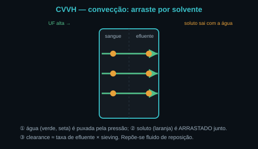
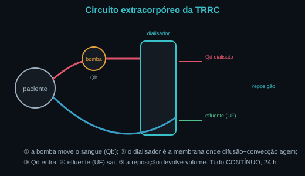
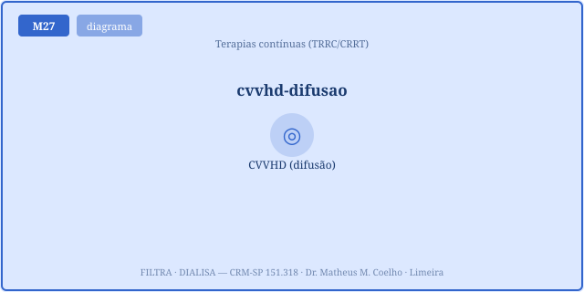
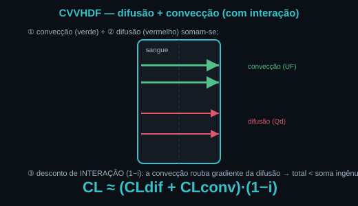
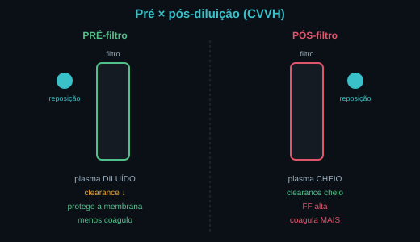
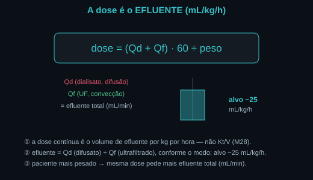
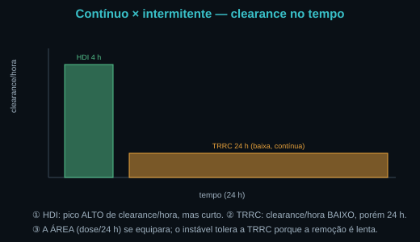
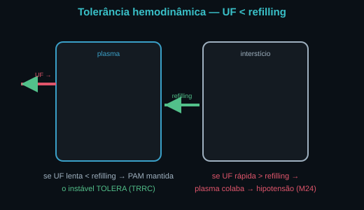

A TRRC substitui FUNÇÕES do rim por física. Remoção de
soluto = difusão (gradiente) + convecção (arraste por solvente); remoção de volume =
ultrafiltração (pressão transmembrana). Os três modos diferem em qual física domina: CVVH
(convecção), CVVHD (difusão), CVVHDF (os dois). As Fig. 1–8 voltam no Caso, na Trilha e na Avaliação.
Atribuição em CREDITS.md (em curadoria).
Na convecção, ultrafiltra-se muito (UF alta) e repõe-se fluido de reposição; o soluto é carregado junto com a água que atravessa a membrana — "solvent drag". O clearance ≈ taxa de efluente convectivo × sieving (o sieving de soluto pequeno como a ureia ≈ 1). É a física que melhor remove moléculas médias.


Na difusão, o dialisato corre em contracorrente e o soluto passa do sangue (concentrado) para o dialisato (limpo), pelo gradiente de concentração. No fluxo baixo da TRRC o dialisato satura (atinge a concentração do sangue) → o clearance ≈ Qd para pequenos solutos: a membrana (KoA) deixa de ser o gargalo, o fluxo de dialisato é que limita.


A reposição (na CVVH/CVVHDF) entra antes (pré) ou depois (pós) do filtro. A pré-diluição dilui o plasma que chega ao filtro → o clearance efetivo cai (fator plasma/(plasma+pré)), mas protege a membrana e reduz coágulo. A pós-diluição não dilui → clearance cheio, porém a fração de filtração sobe e o filtro coagula mais.


A HDI tem clearance altíssimo por hora (~200 mL/min) por 4 h; a TRRC tem clearance baixo por hora (~25–45 mL/min) — mas por 24 h. A área (dose/24 h, clearance × tempo) se equipara. A vantagem do contínuo não é eficiência: é a gentileza — remover devagar é o que o instável tolera.
Quantitativamente: um soluto pequeno como a ureia ou o K⁺ (mEq/L) tem sieving ≈ 1 e atravessa as duas físicas com facilidade; o que muda entre os modos é como ele sai (arraste ou gradiente), não se sai. O contínuo aposta no tempo.


UTI. Um doente em TRRC e as decisões de física e fluxo. A pergunta de cada ato: qual modo, qual fluxo, e por quê? Volte às Fig. 1, 5 e 7: a física decide.
Substitui funções por física: difusão, convecção e ultrafiltração (M19). Não recupera a glândula nem a secreção tubular; depura soluto e remove volume — até o rim voltar, ou indefinidamente.
Por convecção: ultrafiltra-se muito e o soluto é arrastado pela água (solvent drag). O clearance ≈ taxa de efluente × sieving (Fig. 1). Repõe-se fluido de reposição para não desidratar.
Por difusão: o dialisato em contracorrente cria gradiente e o soluto passa do sangue para ele. No fluxo baixo da TRRC o dialisato satura → clearance ≈ Qd para pequenos solutos (Fig. 3).
A soma de difusão (Qd) + convecção (Qf), com um desconto de interação (a convecção rouba gradiente da difusão). O total fica abaixo da soma ingênua, mas acima de cada componente isolado (Fig. 4).
Porque, no fluxo baixo, o dialisato satura — atinge a concentração do sangue e não pode carregar mais. O Qd é o teto; subir o KoA aproxima da saturação, mas não a ultrapassa.
A pré dilui o plasma antes do filtro → clearance efetivo ↓, mas protege a membrana e coagula menos. A pós mantém o clearance, mas a fração de filtração sobe e o filtro coagula mais (Fig. 5).
O efluente em mL/kg/h (alvo ~25), não o Kt/V. Efluente = Qd + Qf conforme o modo; dose = efluente ÷ peso (Fig. 6). O detalhamento está em M28.
Porque a vantagem não é eficiência: é gentileza. O clearance/hora é baixo, mas integrado em 24 h a dose se equipara (Fig. 7). A remoção lenta de volume (UF < refilling) é o que o instável tolera.
A TRRC devolve o meio interno à faixa — depura escórias, corrige eletrólitos e remove volume — no ritmo que a hemodinâmica tolera. Não substitui o rim; substitui suas funções por física, contínua e gentilmente.
Os controles do Lab movem o ponto nesta curva. Eixo horizontal = fluxo da modalidade (Qf no convectivo CVVH/CVVHDF; Qd no difusivo CVVHD), em mL/min; eixo vertical = clearance total (mL/min). A curva azul varre o fluxo no modo escolhido; o marcador é o ponto de operação atual, colorido pelo modo. Note como a pré-diluição achata a curva e como a difusão satura.
| Saída | Atual | Comentário |
|---|---|---|
| Modo | — | qual física domina |
| Clearance total (mL/min) | — | difusão + convecção |
| Componentes (dif · conv) | — | cada física isolada |
| Dose de efluente (mL/kg/h) | — | (Qd+Qf)·60 ÷ peso · alvo ~25 |
| Eficiência/hora · dose/24 h (vs HDI) | — | contínuo: baixa/hora, ok/24h |
| Tolerância (UF × refilling) | — | UF < refilling = tolera |